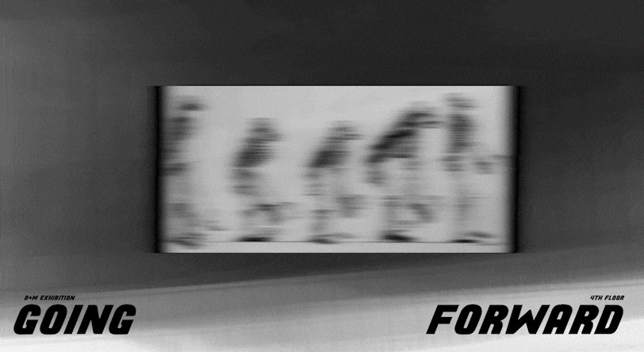

'Inlayed Gardens' , Prithi khalique
Inlayed Gardens revolves around the conversion of photographs into compositional reiterations . Using traditional watercolors and 3d softwares, I reconstructed the compositions by layering them using spline tools and texture mapping, making multiple layers from watercolors on the images to the 3D shapes. The outcome comprises a collection of intricate 3D compositions and animations, transforming the flowers and fauna from mere photographs into videos.
Going Forward is a rotational exhibition space and archive housing works of D+M students.
The exhibition will assemble digital, physical, and in-progress works that will live in the D+M front corridor.
In tandem with the corridor exhibition, Going Forward will also feature an archive website that will accumulate over the course of the semester. This navigable website can be accessed through the monitor display in the space.
